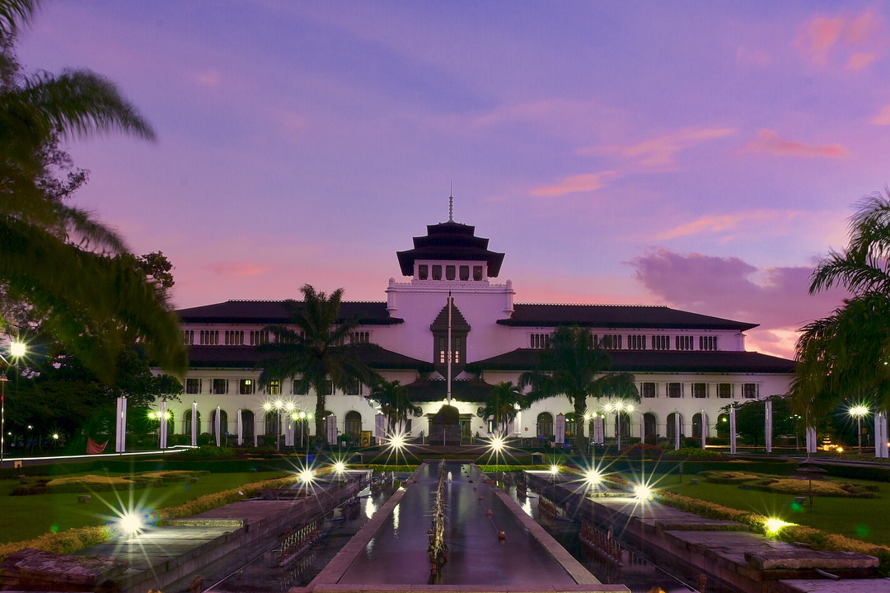
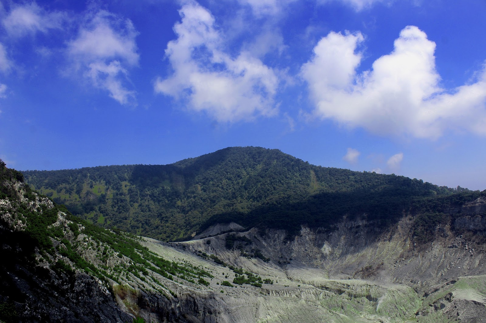
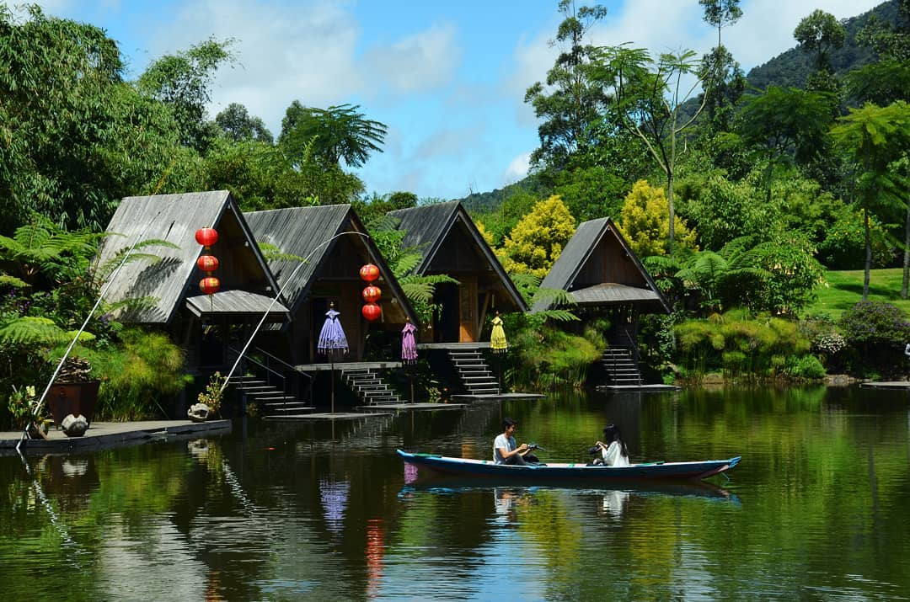

Sejarah

Kota ini tercatat dalam berbagai sejarah penting yang pernah terjadi
di Indonesia, salah satunya sebagai tempat berdirinya sebuah
perguruan tinggi teknik pertama di Indonesia (Technische Hoogeschool
te Bandoeng–TH Bandung, sekarang Institut Teknologi Bandung–ITB),
lokasi ajang pertempuran pada masa kemerdekaan, serta pernah menjadi
tempat berlangsungnya Konferensi Asia-Afrika 1955, suatu pertemuan
yang menyuarakan semangat anti kolonialisme, bahkan Perdana Menteri
India Jawaharlal Nehru dalam pidatonya mengatakan bahwa Bandung
adalah ibu kotanya Asia-Afrika.
Pada tahun 1990 kota Bandung terpilih sebagai salah satu kota paling
aman di dunia berdasarkan survei majalah Time. Kota kembang
merupakan sebutan lain untuk kota ini, karena pada zaman dahulu kota
ini dinilai sangat cantik dengan banyaknya pohon dan bunga-bunga
yang tumbuh di sana. Selain itu Bandung dahulunya disebut juga
dengan Paris van Java karena keindahannya. Selain itu kota Bandung
juga dikenal sebagai kota belanja, dengan mall dan factory outlet
yang banyak tersebar di kota ini, dan saat ini berangsur-angsur kota
Bandung juga menjadi kota wisata kuliner. Dan pada tahun 2007,
konsorsium beberapa LSM internasional menjadikan kota Bandung
sebagai pilot project kota terkreatif se-Asia Timur. Saat ini kota
Bandung merupakan salah satu kota tujuan utama pariwisata dan
pendidikan.
Geografis

Kota Bandung dikelilingi oleh pegunungan, sehingga bentuk morfologi
wilayahnya bagaikan sebuah mangkuk raksasa,[11] secara geografis
kota ini terletak di tengah-tengah provinsi Jawa Barat, serta berada
pada ketinggian ±768 m di atas permukaan laut,[12] dengan titik
tertinggi di berada di sebelah utara dengan ketinggian 1.050 meter
[12] di atas permukaan laut dan sebelah selatan merupakan kawasan
rendah dengan ketinggian 675 meter di atas permukaan laut.[12]
Kota Bandung dialiri dua sungai utama, yaitu Sungai Cikapundung dan
Sungai Citarum beserta anak-anak sungainya yang pada umumnya
mengalir ke arah selatan dan bertemu di Sungai Citarum. Dengan
kondisi yang demikian, Bandung Selatan sangat rentan terhadap
masalah banjir terutama pada musim hujan.
Wisata
Sejak dibukanya Jalan Tol Cipularang, kota Bandung telah menjadi
tujuan utama dalam menikmati liburan akhir pekan terutama dari
masyarakat yang berasal dari Jakarta sekitarnya. Selain menjadi kota
wisata belanja, kota Bandung juga dikenal dengan sejumlah besar
bangunan lama berarsitektur peninggalan Belanda.
Wisata 1

Terletak di Cikole, Lembang, Kabupaten Bandung Barat, Jawa Barat,
adalah hutan anggrek terbesar di Indonesia. Enggak main-main,
jumlah anggrek di sini mencapai 20.000 tanaman! Selain anggrek,
barisan pohon pinus yang ada di sana juga membuat pemandangan
Orchid Forest Cikole menjadi sangat indah.
Selain menawarkan pemandangan hutan pinus dan anggrek, Orchid
Forest Cikole juga memiliki tempat bermain golf, area bermain
dengan kelinci, jembatan tali yang bersinar di malam hari, sampai
horse ranch.
Farm House Lembang
Berada di jalur utama Bandung-Lembang, Farm House menjadi objek
wisata yang tidak pernah sepi pengunjung. Selain karena letaknya
strategis, kawasan ini juga menghadirkan nuansa wisata khas Eropa.
Semua itu diterapkan dalam bentuk spot swafoto Instagramable.